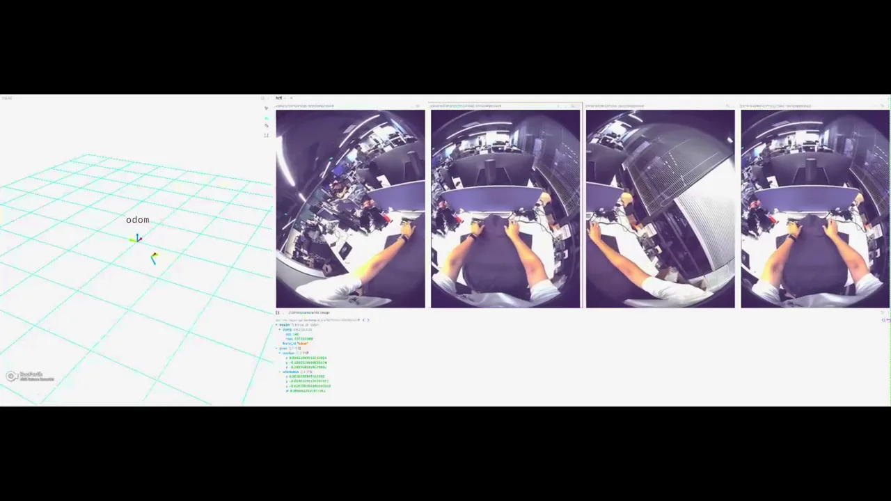
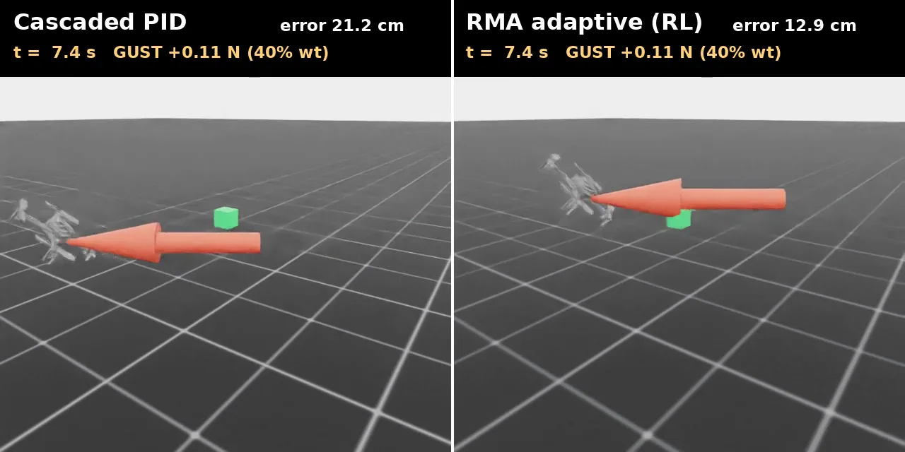
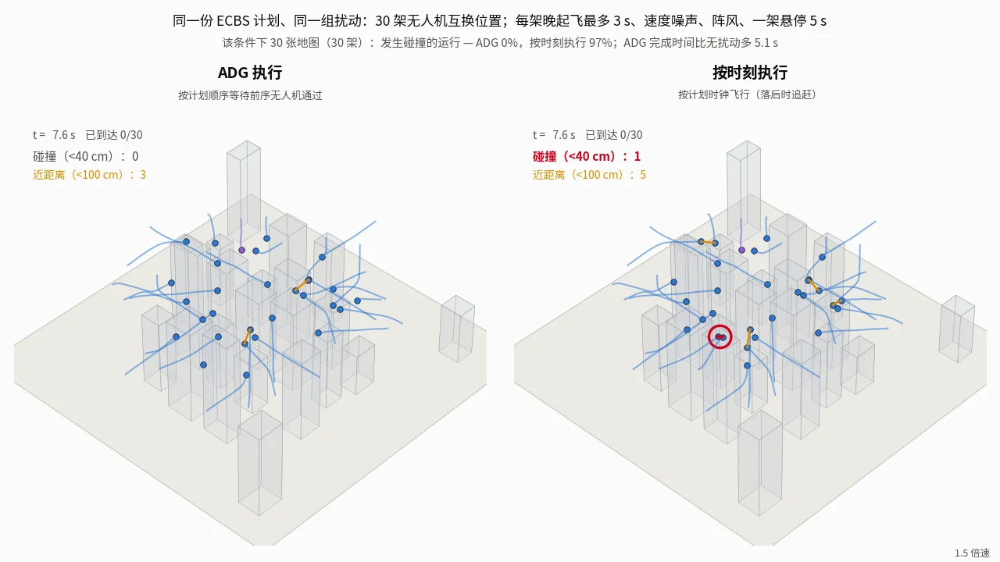
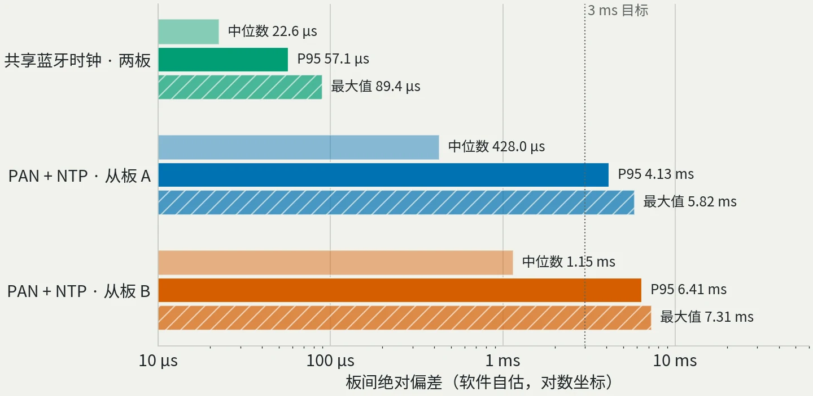
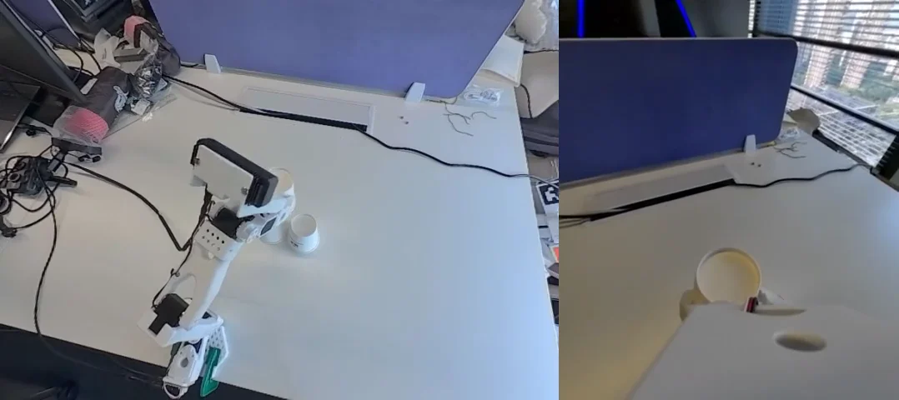
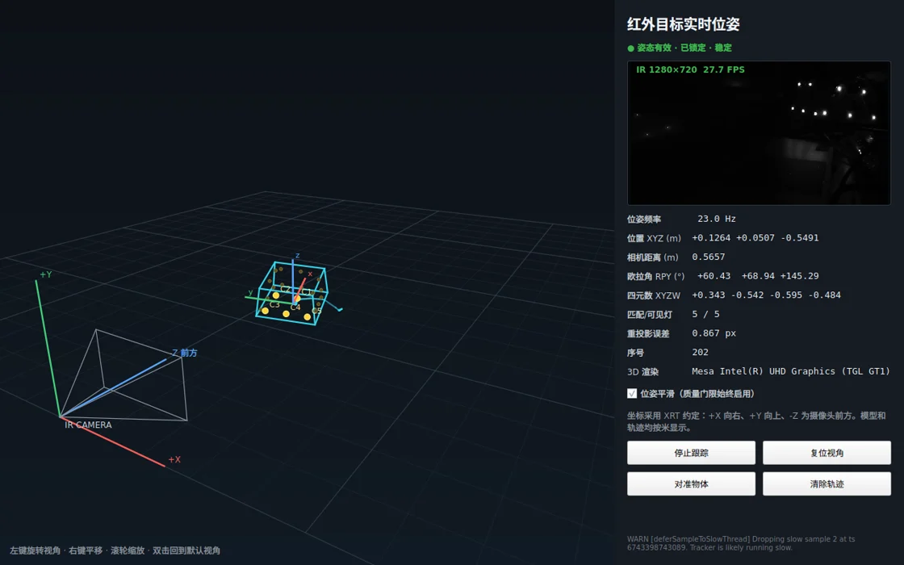
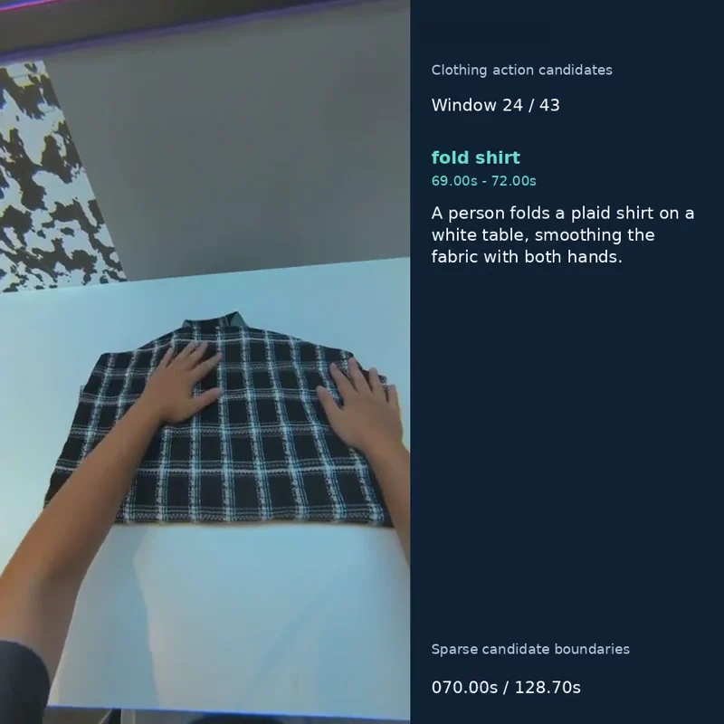
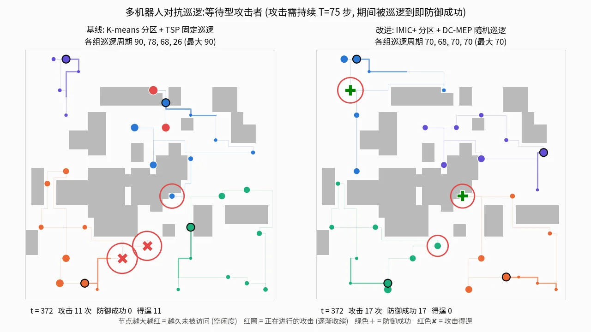

代表作
-
工作项目
Insight Capture Dashboard
头部加双腕三相机同步采集，腕部画面匹配头部地图，统一到一个坐标系。
- 腕部相对头部的位置 RMSE（离线标定板）
- 10.8–15.2 mm
- 双端实录合包消息逐条哈希一致
- 66,698 条
-

工作项目
EgoHalo 设备与数据工程
四路鱼眼头戴设备的采集控制台，设备端直写 MCAP 的多路对齐起录。
- 设备端直接写 MCAP 相对 ROS 录包的 CPU
- −30%
- 图像间隔超过 50 ms 的次数
- 65 → 15
-

研究项目 · 2025–2026
无人机抗风悬停：PID、LQR 与强化学习
Isaac Lab 里对比串级 PID、LQR/LQI 与 PPO、TD3、DQN、RMA 自适应策略，在理想和接近真实（电机滞后、延迟、噪声）两套仿真中按同一协议评估。
- 阵风峰值误差：RMA 自适应策略 vs PID
- 9.2 vs 21.0 cm
- 80% 机重强风下成功率：PID vs RL
- 93% vs ≤54%
-

实习项目 · 2025
无人机集群路径规划与协同避障
中科院智能机械所实习项目。城市街区里的多无人机协同规划：时空 A* 冲突协调 + B 样条轨迹，扩到 50 架与 CBS、ECBS、ORCA 对比。
- 10 架交叉飞行的机间碰撞率
- 93% → 0
- 30 架叠加延迟和噪声，动作依赖图执行
- 720 次 / 0 碰撞
全部项目
筛选“全部”时只列代表作以外的 8 个项目；按类别筛选时包含代表作。
-
工作项目
Insight Capture Dashboard
头部加双腕三相机同步采集，腕部画面匹配头部地图，统一到一个坐标系。
10.8–15.2 mm 腕部相对头部的位置 RMSE（离线标定板）
GitHub 仓库 -
研究项目 · 2025–2026
无人机抗风悬停：PID、LQR 与强化学习
Isaac Lab 里对比串级 PID、LQR/LQI 与 PPO、TD3、DQN、RMA 自适应策略，在理想和接近真实（电机滞后、延迟、噪声）两套仿真中按同一协议评估。
9.2 vs 21.0 cm 阵风峰值误差：RMA 自适应策略 vs PID
GitHub 仓库 -
实习项目 · 2025
无人机集群路径规划与协同避障
中科院智能机械所实习项目。城市街区里的多无人机协同规划：时空 A* 冲突协调 + B 样条轨迹，扩到 50 架与 CBS、ECBS、ORCA 对比。
93% → 0 10 架交叉飞行的机间碰撞率
GitHub 仓库 -

-

个人项目
大模型操控 SO101 机械臂
让 Codex 自己看图、下发关节目标，在真机上闭环完成红块入箱和叠纸杯，再把成功轨迹交给 ACT 学习。
20 + 15 条 红块入箱、叠纸杯的真机成功记录
GitHub 仓库 -

-

-

-
-

-

研究项目
SLAM Navigation Benchmark
同一台小车对比四种激光惯性 SLAM，发现点云接法决定避障表现。
3 倍 同一规划参数下到障碍的最小距离差（0.678 vs 0.200 m）
GitHub 仓库 -

关于
我在 ROBOCON 的电控组入门机器人：调电机、写 CAN、一遍遍整定 PID。后来做过仿真里的规划和强化学习，也做过激光 SLAM 的实车评测。现在主要做具身智能的数据采集设备，从相机、IMU 和固件，到同步、采集软件和数据处理，再拿机械臂和移动机器人验证这些数据。
- 现在具身智能数据采集设备与数据工程
- 2025–2026新加坡国立大学 · 机器人硕士
- 2025中科院智能机械所 · 无人机集群系统开发实习
- 2024–2025新加坡国立大学 · 交换
- 2023–2024ROBOCON 电控组 · 全国二等奖
- 2021–2025南方科技大学 · 机器人工程本科，优秀毕业生
联系
- 邮箱
- nusniumu@gmail.com
- 微信
- NM19854495229
- 电话
- 19854495229
- GitHub
- NUSNiuMu 的仓库